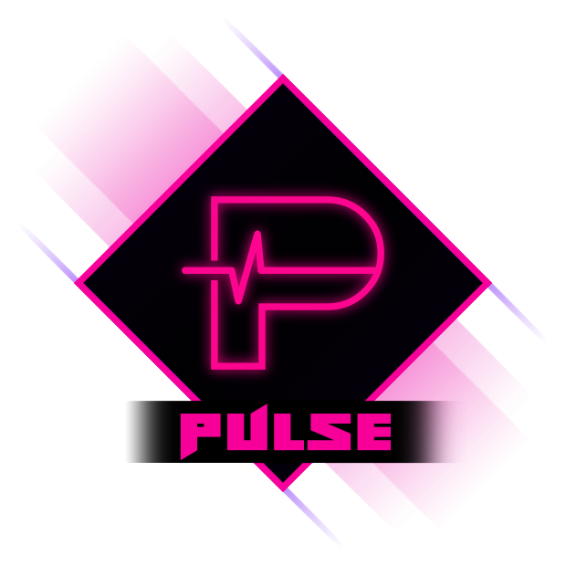

The beating heart of your game.
Pulse is a signal and event system for GameMaker.
If you want your UI, audio, VFX, and gameplay to react to the same moment without everything hard-calling everything else, this is the tool. You broadcast “something happened”, and anyone who cares can respond.
Start here
If you’re brand new to Pulse, this is the path:
- Quickstart gets you running in a few minutes.
- Beginner Implementation explains the core ideas and the “basic” way to use Pulse in a project.
- Advanced Implementation covers queueing, sticky signals, custom buses, queries, and debugging tools.
- Common Patterns and Recipes is the copy-paste page. Real stuff you’ll actually do in real games.
Pulse in a nutshell
Pulse is a tiny message bus living inside your game.
- You pick a signal id (usually a macro or enum).
- Something sends that signal, optionally with a payload.
- Anything subscribed to that signal runs its callback.
The sender doesn’t need a pointer to the listeners. The listeners don’t need a pointer to the sender. Everyone only agrees on the signal id and what the payload means.
That one change tends to delete a whole lot of “this object has to know about that object” code.
Two rules that keep you sane
First, define your signals in one place. Don’t scatter magic numbers/strings across random objects.
Second, if you use any queued features (PulsePost, delayed posts, or if you ever hit deep re-entrancy), make sure you flush the queue once per frame. The Quickstart shows where to put that.
This is part of the RefresherTowel Games frameworks
Pulse is part of the RefresherTowel Games suite of reusable frameworks for GameMaker. Every tool in the suite is designed to be:
- Easy to drop into a project
- Properly documented
- Feather-friendly (JSDoc annotations everywhere)
- And happy to work alongside the other tools, instead of fighting them
Check out the other frameworks currently available:
 Statement - An advanced state machine handler, easy to use for beginners, flexible enough for advanced users, with a fully interactive live visual debugger!
Statement - An advanced state machine handler, easy to use for beginners, flexible enough for advanced users, with a fully interactive live visual debugger! Echo - A lightweight debug logging tool, allowing you to prioritise and filter debug messages, alongside dumping them to file easily.
Echo - A lightweight debug logging tool, allowing you to prioritise and filter debug messages, alongside dumping them to file easily.
These frameworks are designed specifically to work together easily, to allow you to focus on actually making your games, rather than inventing tooling! See how you might use them with Pulse here!
Pulse ships with Echo (a minimalist, yet powerful, debug logging framework) for free!
Help & Support
-
Bug reports / feature requests
The best place to report bugs and request features is the GitHub Issues page:- Pulse Github Issues Page
- If you are not comfortable using GitHub, you can also post in the Pulse discord channel and I can file an issue for you.
It is helpful to include:
- The relevant
Pulse*calls you are making, including code snippets you might suspect the problem comes from.- Whether you are using immediate or queued dispatch.
- Any debug output from
PulseDumpor your debug logger.- Any relevant debug output from
EchoDebugInfo/EchoDebugWarn/EchoDebugSevere.
- Questions / examples / discussion
Join the Pulse discord channel to:- Ask integration questions.
- Share patterns and snippets.
- See how others are using Pulse.